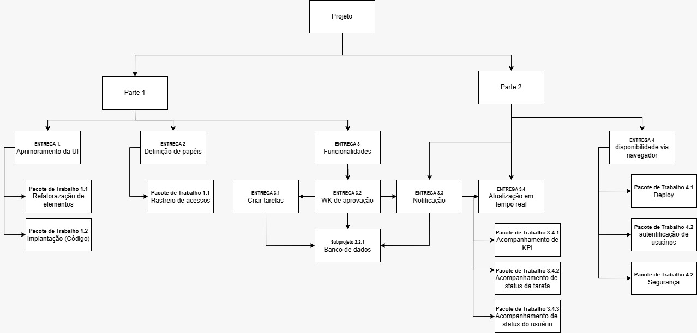

APRESENTAÇÃO · JUNHO 2026
Process Flow — Plataforma de Gestão pelo Método Kanban
Disciplina
Gerenciamento de Projetos
Professor
Prof. Ms. Sidney Galeote
Equipe
Wesley Carvalho · Vinícius Britto · Claudio Gastão Júnior · Wesley Lins
Apresentação: Wesley Carvalho
// 02 — Objetivo
Objetivo do Projeto
Problema Identificado
Falta de ferramenta visual e intuitiva para gestão de projetos acadêmicos
Dificuldade no acompanhamento do progresso por equipes e professores
Ausência de integração entre planejamento e execução
Proposta & Público-Alvo
Plataforma web para acompanhamento visual de projetos via Kanban
Dashboard com métricas e status em tempo real
Público-alvo: Prof. Sidney Galeote e equipes acadêmicas
Apresentação: Wesley Carvalho
// 03 — Evolução
Evolução do Projeto
Fase 1
Kanban & Desenvolvimento Inicial
Aplicação do Kanban para organização das tarefas
Desenvolvimento inicial da interface e estrutura
Uso do Trello como ferramenta de controle visual
Fase 2 — Atual
PMBOK & Evolução do Sistema
Incorporação das práticas do PMBOK ao ciclo de vida
Entrega de documentação formal: TAP, EAP, Cronograma, Riscos
Evolução do protótipo com novas funcionalidades e deploy
Apresentação: Wesley Carvalho
// 04 — Metodologias
Metodologias Utilizadas
Kanban
Visualização do fluxo: A Fazer → Em Andamento → Concluído
Trello
Ferramenta digital para aplicação do Kanban e rastreamento
PMBOK
Guia de boas práticas: áreas de conhecimento e processos
Gestão Híbrida
Kanban ágil combinado com planejamento preditivo do PMBOK
Apresentação: Vinícius Britto
// 05 — Documentação
Documentos de Gerenciamento
Termo de Abertura do Projeto (TAP)
Matriz de Rastreabilidade
Matriz de Riscos do Projeto
Status Report Semanal
Lições Aprendidas (Lessons Learned)
Relatório de Conclusão de Projeto
Todos os documentos seguem as diretrizes do PMBOK · disponíveis para download no painel abaixo.
Apresentação: Vinícius Britto
// 06 — Planejamento
EAP & Cronograma
EAP — 4 entregas principais em pacotes de trabalho
Cronograma — Gantt: Iniciação → Execução → Encerramento

Apresentação: Vinícius Britto
// 07 — Arquitetura
Arquitetura & Desenvolvimento
Estrutura do Sistema
Frontend: Interface Kanban interativa com drag & drop
Dashboard: KPIs e status em tempo real
Banco de dados: Estrutura de projetos e tarefas
Deploy: Disponível via navegador online
HTML/CSS
JavaScript
Figma
Trello
Git
Lovable
Funcionalidades
Login e autenticação de usuários
Fluxo Kanban: criação e movimentação de tarefas
Dashboard com métricas de acompanhamento (KPIs)
Rastreamento de acessos e permissões
Notificações e atualização de status
Segurança e workflow de aprovação
Apresentação: Claudio Gastão Júnior
// 08 — Demonstração
Demonstração do Produto
Login
Autenticação com controle de acesso por perfil de usuário
Dashboards
Visão geral dos projetos, status e KPIs em tempo real
Gestão de Tarefas
Criação, atribuição e acompanhamento por responsável
Fluxo Kanban
Colunas A Fazer → Em Andamento → Concluído
Notificações
Alertas de mudança de status e atribuição de atividades
Apresentação: Claudio Gastão Júnior
// 09 — Resultados
Resultados & Lições Aprendidas
Desafios & Soluções
DESAFIO
Conciliar horários da equipe — solução: reuniões periódicas via Trello
DESAFIO
Requisitos refinados durante execução — solução: priorização das essenciais
DESAFIO
Padronização visual da interface — solução: protótipos Figma como referência
Aprendizados
Ferramentas visuais melhoram rastreabilidade e entregas
Abordagem híbrida Kanban + PMBOK aumenta controle
Documentação PMBOK mantém o projeto alinhado e auditável
Requisitos devem ser detalhados antes da implementação
Apresentação: Wesley Lins
// 10 — Encerramento
Considerações Finais
Protótipo funcional entregue dentro do escopo e prazo
Documentação completa: TAP, EAP, Cronograma, Riscos e Lições
Validado com feedback positivo do Prof. Sidney Galeote
Gestão híbrida Kanban + PMBOK aplicada com sucesso
Evolução Futura
Persistência de dados e banco de dados completo
Autenticação avançada e perfis de usuário
Notificações em tempo real e integração com e-mail
Expansão para ambientes organizacionais
OBRIGADO — Wesley Carvalho · Vinícius Britto · Claudio Gastão Júnior · Wesley Lins
Apresentação: Wesley Lins
Modal / Detalhe
Protótipos
Abrir Site
Dashboard Principal
1 / 1
75%
Demonstração: Protótipos Figma